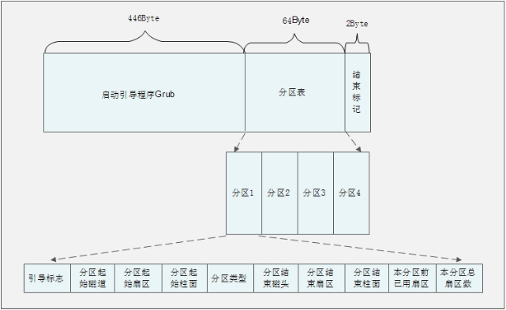

1、CentOS 6.x基本启动流程
目前CentOS 6.x的启动流程是这样的：
1）服务器加电，加载BIOS信息，BIOS进行系统检测。依照BIOS设定找到第一个可以启动的设备（一般是硬盘）
2）读取第一个启动设备的MBR（主引导记录），加载MBR中的BootLoader（启动引导程序，最常见的是GRUB）
3）依据BootLoader的设置加载内核，内核会再进行一遍系统检测。系统一般会采用内核检测硬件的信息，而不是采用BIOS的自检信息。内核在检测硬件的同时，还会通过加载动态模块的形式加载硬件的驱动。
4）内核启动系统的第一个进程，就是/sbin/init
5）由/sbin/init进程调用/etc/init/rcS.conf的配置文件，通过这个配置文件调用/etc/rc.d/rc.sysinit配置文件。而/etc/rc.d/rc.sysinit配置文件是用来进行系统初始化的，主要配置计算机的初始环境
6）还是通过/etc/init/rcS.conf配置文件，调用/etc/inittab配置文件。通过/etc/inittab配置文件来确定系统的默认运行级别
7）确定默认运行级别后，调用/etc/init/rc.conf配置文件。
8）通过/etc/init/rc.conf调用并执行/etc/rc.d/rc脚本，并传入运行级别参数
9）/etc/rc.d/rc确定传入的运行级别，然后运行相应的运行级别目录/etc/rc[0-6].d/中的脚本。
10）/etc/rc[0-6].d/目录中的脚本依据设定好的优先级依次启动和关闭
11）最后执行/etc/rc.d/rc.local中的程序
12）如果是字符界面启动，就可以看到登陆界面了。如果是图形界面启动，就会调用相应的X-Window接口。
2、BIOS自检
BIOS（Basic Input Output System，基本输入输出系统）是固化在主板上的一个ROM（只读存储器）芯片上的程序，主要保存计算机的基本输入输出信息、系统设置信息、开机自检程序和系统自启动程序。用来为计算机提供最底层和最直接的硬件设置和控制。
BIOS在系统的启动过程中会加载这些主机信息，并完成了第一次系统的自检（第二次自检由内核完成），我们把BIOS的自检过程称作POST（Power On Self Test，加电自检）。自检完成之后开始执行硬件的初始化，之后定义可以启动的设备顺序，然后从第一个可以启动设备的MBR（Main Boot Record，主引导记录）中读取Boot Loader（启动引导程序）。Linux中最常见的Boot Loader就是GRUB程序。
3、MBR的结构
MBR也就是主引导记录，位于硬盘的0磁道，0柱面，1扇区中。主要记录了启动引导程序和磁盘的分区表。以下是MBR的结构：

MBR总共用了一个扇区，也就是512Bytes。其中446Bytes安装了启动引导程序，其后的64Bytes描述分区表，最后的2个Bytes是结束标记。在前面的分区章节中已经知道，每块硬盘只能划分4个主分区，原因就是MBR中描述分区表的空间只有64个Byte。其中每个分区必须占用16个Byte，那么64Bytes就只能划分四个主分区。每个分区的16个字节的规划参见下表：
| 存储字节 | 数据内容及含义 |
| 第1字节 | 引导标记 |
| 第2字节 | 本分区的起始磁道号 |
| 第3字节 | 本分区的起始扇区号 |
| 第4字节 | 本分区的起始柱面号 |
| 第5字节 | 分区类型，分区类型可以识别主分区和扩展分区 |
| 第6字节 | 本分区的结束磁道号 |
| 第7字节 | 本分区的结束扇区号 |
| 第8字节 | 本分区的结束柱面号 |
| 第9-12字节 | 本分区之前已经占用的扇区数 |
| 第13-16字节 | 本分区的总扇区 |
4、启动引导程序的作用
启动引导程序就拥有了以下一些功能：
1）加载操作系统的内核。这是启动引导程序最主要的功能。
2）拥有一个可以让用户选择的菜单，来选择到底启动哪个系统。
3）可以调用其他的启动引导程序，这是多系统启动的关键。不过需要注意的是windows的启动引导程序不能调用Linux的启动引导程序，所以一般建议先安装windows，后安装Linux，是为了让Linux的启动引导程序安装MBR当中，覆盖windows的启动引导程序。当然这个安装顺序不是绝对了，就算是最后安装了windows，也可以通过手工安装一遍GRUB的方法，来保证MBR中安装的还是Linux的启动引导程序。
5、加载内核，内核重新自检并加载内核模块
1）内核的加载和内核模块
Grub加载了内核之后，内核首先会再一次系统的自检，而不一定使用BIOS检测的硬件信息。这时内核开始替代BIOS接管Linux的启动过程了。内核完成再次硬件自检之后，开始采用动态的方式加载每个硬件模块，这个动态模块大家可以想像成为硬件的驱动（默认Linux硬件是不需要大家手工安装的，如果是重要的功能会直接编译到内核当中，非重要的功能，比如硬件驱动会编译为模块，在需要时由内核调用。不过要是没有被内核识别的硬件，要想驱动的话，就需要手工安装这个硬件的模块了。）
Linux的内核放在/boot的启动目录中。
[root@localhost boot]# ls
config-2.6.32-431.el6.i686 #内核的配置文件，内核编译时选择的功能与模块
efi #可扩展固件接口，是Inter为全新PC固件的体系结构、接口和服务提出的建议标准
grub #启动引导程序Grub的数据目录
initramfs-2.6.32-431.el6.i686.img #虚拟文件系统（CentOS6.x中用initramfs替代了initrd，但功能是一样）
lost+found #/boot分区的备份目录
symvers-2.6.32-431.el6.i686.gz #模块符号信息
System.map-2.6.32-431.el6.i686 #内核功能和内存地址的对应列表
vmlinuz-2.6.32-431.el6.i686 #用于启动Linux内核。这个文件是一个压缩的内核镜像
Linux会把不重要的功能编译成模块，在需要时再调用，保证了内核不会过大。在多数Linux中，都会把硬件驱动编译成模块。这些模块保存在/lib/modules/目录内。常见的USB、SATA、和SCSI等硬盘设备的驱动，还有一些特殊文件系统（如LVM、RAID等）的驱动都是以模块的方式来保存的。
如果Linux是安装在IDE硬盘中，并且采用的是默认的ext3/4文件系统，那么内核启动后加载根分区和模块的加载都没有什么问题，系统会顺利启动。可是如果Linux是安装在SCSI硬盘之上，或者采用的是LVM文件系统，那么内核（内核加载入内存是启动引导程序Grub调用的，并不存在硬盘驱动不识别的问题）在加载根目录之前是需要加载SCSI硬盘或LVM文件系统的驱动的。但是SCSI硬盘的驱动和LVM文件系统的驱动都是放在硬盘的/lib/modules/目录内的，既然内核没有办法识别SCSI硬盘或LVM文件系统，那怎么可能读取/lib/modules/内的驱动呢？Linux给出的解决方法是使用initramfs这个虚拟文件系统来处理问题。
2）initramfs内存文件系统
CentOS 6.x中使用initramfs内存文件系统取代了CentOS 5.x中的initrd RAM Disk。他们作用类似，可以通过启动引导程序加载到内存中，然后会解压缩并在内存中仿真成一个根目录，并且这个仿真文件系统能够提供一个可执行程序，通过程序来加载启动过程中所需要的内核模块，比如USB、SATA、SCSI硬盘的驱动和LVM、RAID文件系统的驱动。也就是说通过initramfs虚拟文件系统在内存中模拟一个根目录，然后在这个模拟的根目录中加载SCSI等硬件的驱动，就可以加载真正的根目录了，才能调用Linux的第一个程序/sbin/init。
系统启动流程如下：

[root@localhost ~]# mkdir /tmp/initramfs #建立测试目录
[root@localhost ~]# cp /boot/initramfs-2.6.32-279.el6.i686.img /tmp/initramfs/ #复制initramfs文件
[root@localhost ~]# cd /tmp/initramfs/
[root@localhost initramfs]# file initramfs-2.6.32-279.el6.i686.img
initramfs-2.6.32-279.el6.i686.img: gzip compressed data, from Unix, last modified: Wed Apr 10 21:49:34 2013, max compression #查看文件类型，发现这个文件是一个使用gzip的压缩包
[root@localhost initramfs]# mv initramfs-2.6.32-279.el6.i686.img initramfs-2.6.32-279.el6.i686.img.gz
#修改文件的后缀名为.gz
[root@localhost initramfs]# gunzip initramfs-2.6.32-279.el6.i686.img.gz #解压缩
[root@localhost initramfs]# ls
initramfs-2.6.32-279.el6.i686.img
[root@localhost initramfs]# file initramfs-2.6.32-279.el6.i686.img
initramfs-2.6.32-279.el6.i686.img: ASCII cpio archive (SVR4 with no CRC)
#查看文件类型，使用cpio命令的压缩文件
[root@localhost initramfs]# cpio -ivcdu < initramfs-2.6.32-279.el6.i686.img #解压缩
[root@localhost initramfs]# ll
drwxr-xr-x 2 root root 4096 5月 8 08:58 bin
drwxr-xr-x 2 root root 4096 5月 8 08:58 cmdline
drwxr-xr-x 3 root root 4096 5月 8 08:58 dev
-rw-r--r-- 1 root root 19 5月 8 08:58 dracut-004-335.el6
drwxr-xr-x 2 root root 4096 5月 8 08:58 emergency
drwxr-xr-x 7 root root 4096 5月 8 08:58 etc
-rwxr-xr-x 1 root root 8879 5月 8 08:58 init
drwxr-xr-x 2 root root 4096 5月 8 08:58 initqueue
drwxr-xr-x 2 root root 4096 5月 8 08:58 initqueue-finished
drwxr-xr-x 2 root root 4096 5月 8 08:58 initqueue-settled
drwxr-xr-x 2 root root 4096 5月 8 08:58 initqueue-timeout
-rw------- 1 root root 38422528 5月 8 08:56 initramfs-2.6.32-431.el6.i686.img
drwxr-xr-x 9 root root 4096 5月 8 08:58 lib
......省略部分输出......
drwxr-xr-x 2 root root 4096 5月 8 08:58 cmdline
drwxr-xr-x 3 root root 4096 5月 8 08:58 dev
-rw-r--r-- 1 root root 19 5月 8 08:58 dracut-004-335.el6
drwxr-xr-x 2 root root 4096 5月 8 08:58 emergency
drwxr-xr-x 7 root root 4096 5月 8 08:58 etc
-rwxr-xr-x 1 root root 8879 5月 8 08:58 init
drwxr-xr-x 2 root root 4096 5月 8 08:58 initqueue
drwxr-xr-x 2 root root 4096 5月 8 08:58 initqueue-finished
drwxr-xr-x 2 root root 4096 5月 8 08:58 initqueue-settled
drwxr-xr-x 2 root root 4096 5月 8 08:58 initqueue-timeout
-rw------- 1 root root 38422528 5月 8 08:56 initramfs-2.6.32-431.el6.i686.img
drwxr-xr-x 9 root root 4096 5月 8 08:58 lib
......省略部分输出......
#这就是initramfs虚拟文件系统中的内容
6、调用/sbin/init进程
在内核加载完毕，并进行完硬件检测与驱动程序加载后，这时主机硬件已经准备完毕，内核会呼叫第一个进程/sbin/init。/sbin/init最主要的功能就是准备软件执行环境，包括系统的主机名、网络设定、语言、文件系统格式及其他服务启动等。这里和CentOS 5.x中有较大变化，在CentOS 5.x中，主要是通过init进程的配置文件/init/inittab来设定系统，并启动Linux的。可是在CentOS 6.x中由于Upstart启动服务来替换以前的init，所以/etc/inittab这个配置文件中只能定义系统的默认运行级别，而其他的功能是靠/etc/init目录中的其他配置文件实现。可以把/etc/init/目录中的配置文件看成是以前/etc/inittab这个文件功能的分拆。
7、调用/etc/init/rcS.conf配置文件
加载/sbin/init进程后，由init进程调用/etc/init/rcS.conf配置文件，这个配置文件主要功能是两个：
a、先调用/etc/rc.d/rc.sysinit，然后由/etc/rc.d/rc.sysinit配置文件进行Linux系统初始化；
b、然后再调用/etc/inittab，然后/etc/inittab配置文件确定系统默认运行级别。
8、由/etc/rc.d/rc.sysinit配置文件进行Linux系统初始化
/etc/rc.d/rcS.conf配置文件会先调用/etc/rc.d/rc.sysinit这个配置文件，这个配置文件主要进行了以下几个工作：
1）获得网络环境
2）挂载设备
3）开机启动画面Plymouth（取替了过往的RHGB）